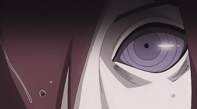

Внешне глаз представлен шестиконечной фигурой с выраженным зрачком. В отличие от брата, Саске научился контролировать Аматерасу: придавать нужную форму и использовать с другими ниндзюцу.
Режим Мудреца Шести Путей
В этом режиме. его глаза становятся желтыми, а его зрачки приобретают крестообразную форму — без появления оранжевой пигментации вокруг глаз, присутствующей в обычном Режиме Мудреца.

Риннеган
Утверждается, что в смутные времена, тот, кто владеет Риннеганом, послан с небес, чтобы стать "Богом Творения", который установит в мире равновесие, или же "Богом Разрушения", который сведет всё в ничто.